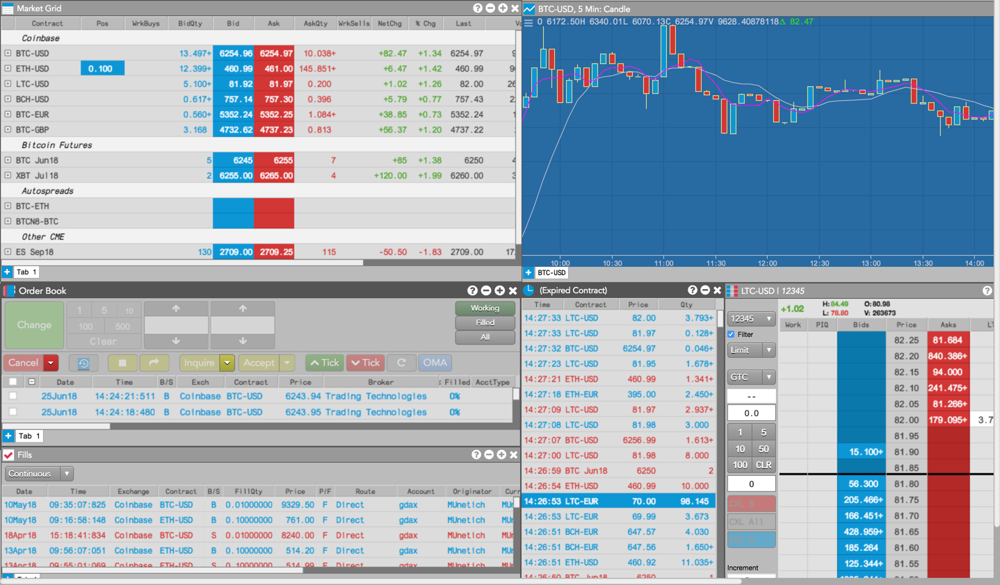

As a member of a trading firm or individual trader managed by a trading firm on the TT® platform, you can trade a variety of digital currencies like Bitcoin, Ethereum, and Litecoin on crypto exchanges. On TT, you also have access to CME and CFE Bitcoin futures markets, which provide the opportunity to hedge trades in cryptocurrencies with positions in their respective futures contracts.

To trade crypto exchanges using the TT platform as a member of a trading firm, contact your risk administrator to set up your credentials in TT. The risk administrator can set up members of your trading firm to trade crypto exchanges using their own crypto exchange accounts or using the same crypto exchange account (if supported by the exchange).
If you are trading with your own crypto account, create your own credentials (e.g., API key, API secret, passphrase, cookie, etc.) in order to configure a connection to the crypto exchange.
If you or a group of traders in your firm are trading with the firm's crypto account, provide your risk administrator with your crypto exchange credentials. The risk administrator needs a unique combination of credentials for each user of the shared crypto account.
For details about setting up access to the following crypto exchanges supported on TT, as well as a list of supported order types per exchange, refer to the Setup help: